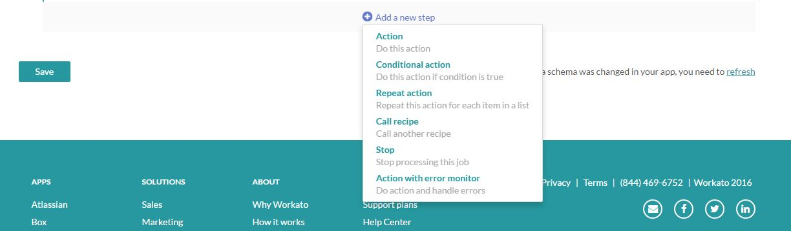
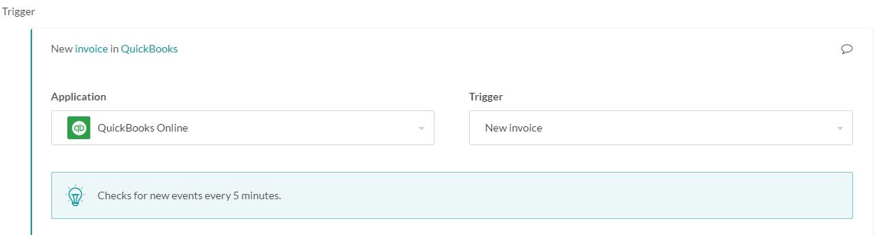
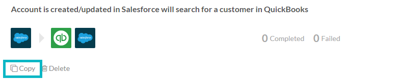
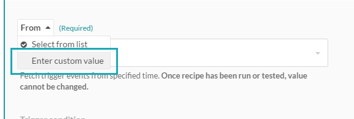
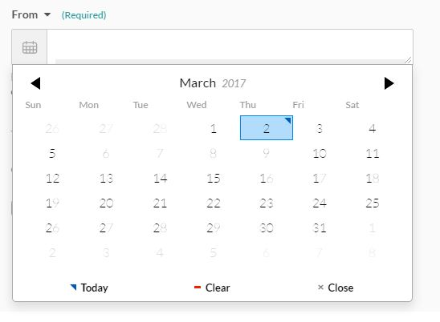
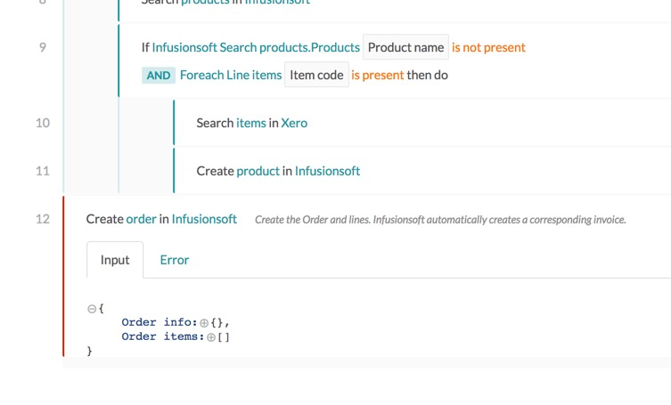
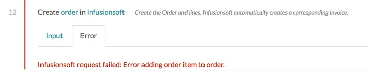
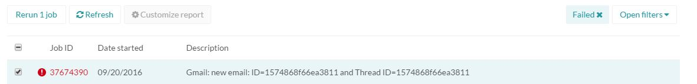

Testing Recipes
Why is testing recipes necessary?
Testing recipes is a good practice. Workato is moving data and information from one business app to the other via the workflow described in recipes. Testing these workflows is critical to ensure that the information entered into the apps by Workato is accurate and does not include bad data.
Good Practices
Using Sandbox Instances
If the application used provides sandbox accounts, they are recommended for testing recipes. This is to ensure no bad data is entered into the Production accounts until the recipe is properly configured and tested.
Adding 'Stops' to prevent unwanted actions from happening
Add a 'Stop' to the recipe when testing if the actions that follow are not needed. Click the '+' button below the last step in the recipe and drag it to the correct place. 
For example, if the last step in the recipe updates a record in the application that is not needed, adding a Stop above it will prevent this. This saves time in correcting the data that has changed in the applications.
Test with all possible scenarios
Recipes often come with multiple lines of conditional logic (i.e. IF this then that).
In these situations, test the recipe with all possible scenarios to ensure the pills are properly mapped and logic properly defined in the recipe. Doing these tests will save time fixing erroneous data after starting your recipe.
Recipe Testing Basics
Recipes built on Workato can vary greatly in complexity. Building and running a 1-line recipe may be simple and straightforward, but as the recipe grows more intricate, understanding how to test and ensure the recipe is built correctly is vital.
Having a Trigger Event
A trigger event is what Workato is looking out for in the application specified in the trigger. For example, if the trigger is "New invoice in QuickBooks", as shown below, there has to be invoices in the QuickBooks account for the test to work. Trigger events should be created prior to testing the recipe, and not when the 'Test Recipe' button is clicked.

Changing the 'From' parameter for testing
Changing the 'From' parameter is critical to testing. If test events have already been created in the application, the 'From' parameter has to be adjusted to allow the recipe to pick up jobs from the correct time.

Triggers for applications do not have the 'From' parameter. In applications like these, jobs will be picked up from the time the recipe is started.
Note: The 'From' parameter cannot be changed once the recipe has been tested or started. Copy the recipe by clicking on the 'Copy' button below the recipe name and change the 'From' parameter. 
There are 2 ways to change the 'From' parameter.
List Values
Some values are provided in the dropdown: Recipe start, Half an hour ago, An hour ago, Yesterday, Last week, Last month and Beginning of time.
For testing, it is recommended that this is set to at least half an hour or an hour ago to ensure there are jobs for testing.
Input Custom Value
If there is a more specific date and time that Workato should begin picking up trigger events from, click on the the dropdown arrow next to 'From' to change the input method. 
Choose 'Enter custom value' and click on the Calendar icon to choose a date and time. 
Test Recipe vs. Start Recipe
The 'Test Recipe' button is the default button when the recipe has not been run. The 'Start Recipe' button can be accessed via the dropdown as shown below:

The 'Test Recipe' button is highly recommended, especially if there are many trigger events in the application. Test Recipe picks up only the first trigger job that it finds and run through it. Once that has been processed, the recipe will stop. Then, check what has been done for this specific record in the 'Jobs' tab.
'Start Recipe' will find all these events that are applicable and start processing them. If there are many trigger events, they will be picked up and run. It is important to test the recipe first and ensure it is running correctly before clicking on 'Start recipe'.
Understanding the Job Report
After clicking on 'Test recipe', check the 'Jobs' tab to see what has run. Any errors that have occurred during the tests will show up in the job report with a red warning logo. Click on the job to see a detailed breakdown of the error.
If there is no red logo, the job is successful. During the testing phase, click on the description to see if the job has completed as expected because the job may have stopped at a conditional stop action as shown below. There might be other steps that were expected to complete. If so, there may be an error in the logic of the recipe that needs fixing.
Finding the Error
The step where the error occurred is highlighted with a red line. Click on the step with the error to see the error details. 
In this case, the error occurs in step 12. Click on the 'Error' tab to see the error details.

Head back to the recipe to fix the incorrect step or to the application to see if there is incorrect data in the fields involved.
Fixing the Error
Re-running jobs are the easiest way to test the recipe after fixing the errors. Check the box next to the job to be rerun and click on the rerun button. 
Starting the recipe
After testing and ensuring the recipe works, start the recipe. The recipe will now run in the background and consistently check for trigger events. In case of an error, an email will be sent to the address specified in the Account Settings.